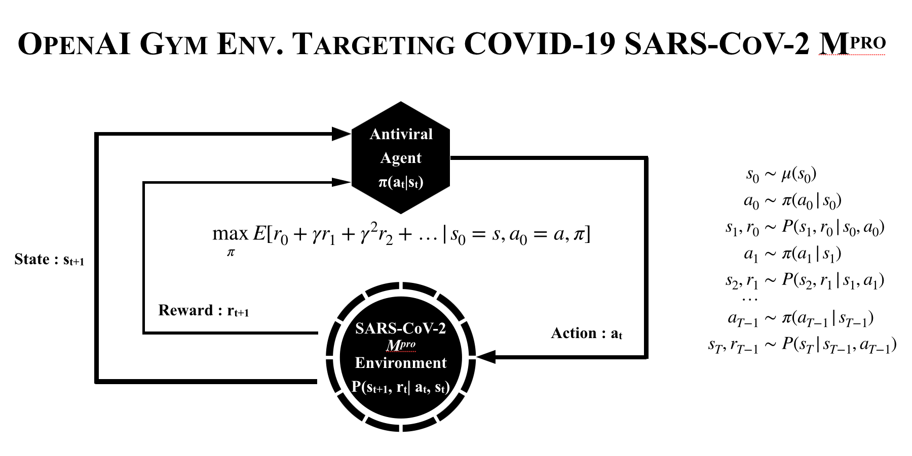
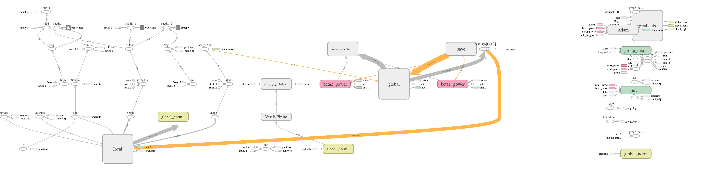

MONTREAL.AI JOINT TASK FORCE ON PANDEMIC COVID-19
Forecasting, Prevention and Mitigation
MONTREAL.AI
Hashtag : #AITaskForce
Open and Collaborative De Novo Discovery of Antiviral Agents for COVID-19 with Deep Reinforcement Learning and OpenAI Gym
MONTREAL.AI proposes a novel, collaborative and open antiviral discovery approach: Discovering new molecules by gradually improving inhibitors of the coronavirus SARS-CoV-2 main protease (Mpro) with deep reinforcement learning, MCTS and the OpenAI Gym.
MONTREAL.AI Covid-19 Response Team
"When something is important enough, you do it even if the odds are not in your favour." - Elon Musk
1. Develop an OpenAI Gym environment targeting coronavirus SARS-CoV-2 main protease (Mpro);
2. Deploy deep RL agents discovering new molecules (score is the negative of binding energy);
3. Synthesize and validate new antiviral agents in biomedical assays.
MONTREAL.AI is looking for volunteers with expertise in life sciences, deep reinforcement learning and the OpenAI Gym.
 protease. Source: Comparative model of novel coronavirus 2019-nCoV protease Mpro, Christian C. Gruber and Georg Steinkellner, 2020. The rendering is licensed under the Creative Commons Attribution-Share Alike 4.0 International license.")
Open-Source Codes and Data, Implementations and Readings to Help Forecast, Prevent and Mitigate COVID-19
Readings
Coronavirus (COVID-19), Centers for Disease Control and Prevention, 2020 : https://www.cdc.gov/coronavirus/2019-nCoV/
Coronavirus tracked: the latest figures as the pandemic spreads, Bernard et al., 2020 : https://www.ft.com/content/a26fbf7e-48f8-11ea-aeb3-955839e06441
Implementations
Epidemic Calculator, Gabriel Goh, 2020 : http://gabgoh.github.io/COVID/index.html
Code for modelling estimated deaths and cases for COVID19, Model from Report 13 of the Imperial College COVID-19 Response Team. GitHub : https://github.com/ImperialCollegeLondon/covid19model
TraceTogether, community-driven contact tracing. Government of Singapore : https://www.tracetogether.gov.sg
Open-Source Codes and Data
Novel Coronavirus COVID-19 (2019-nCoV) Data Repository, Johns Hopkins University CSSE, 2020 : https://github.com/CSSEGISandData/COVID-19
Computational predictions of protein structures associated with COVID-19, DeepMind, 2020 : https://deepmind.com/research/open-source/computational-predictions-of-protein-structures-associated-with-COVID-19
COVID-19 Open Research Dataset Challenge (CORD-19), AI2, CZI, MSR, Georgetown, NIH and The White House, 2020 : https://www.kaggle.com/allen-institute-for-ai/CORD-19-research-challenge

Invite link to join Montreal.AI Open and Collaborative Joint Task Force in Response to COVID-19 on Slack :
https://join.slack.com/t/montrealai/shared_invite/zt-2vk74zhg-EHP1LDotKLWS0aPuhr4yZQ